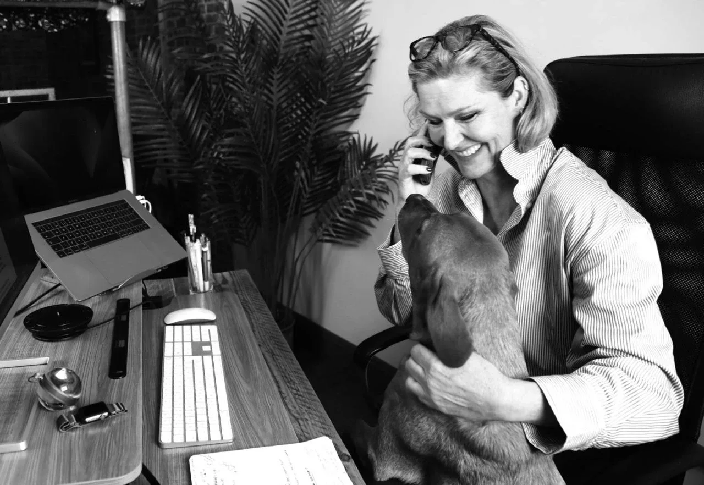

Founder storiesFrom Kate's own profile and posts
Specialist to founder
The legal transcriber who built her own platform
Photo: Matt Hinton Photography
Kate Curtis‑Evans still transcribes for legal professionals every day. With no outside funding and no traditional tech background, she built Audio Genius, and now she is looking for a technical co-founder.
Kate Curtis‑Evans, Founder, Audio Genius. Based in the United Kingdom.
Kate has spent six years transcribing for legal professionals across the UK, and she still does the work every day. She kept seeing the same problem: most transcription technology is built for organisations processing audio, or for people capturing their own meetings. Very little of it is designed around the person producing the finished transcript from someone else's audio, with multiple speakers, difficult recordings, exacting standards, confidentiality requirements and deadline pressure.
So she built what she wanted to use herself. She taught herself to build with vibe coding and AI tools, and learnt to test properly before anything goes live.
“I'm not a tech founder guessing at what professional transcribers need. I am one, and that's the difference.”
The product
Audio Genius is an ASR-powered legal transcription and workflow platform designed around human-led transcription. The technology does the heavy lifting, but the professional keeps control. Because legal audio can hold highly sensitive information, Kate treats security, confidentiality and responsible data handling as fundamental, not features to bolt on later.
It is being developed with feedback from real transcription professionals, and some of the best ideas for the platform have come directly from the people testing it. It now has paying users, and not one of those who signed up at the end of the beta has left. They use it every day.
Foundations first
As of November 2026, Kate has stopped adding new features on purpose, including a legal glossary and template uploads she was looking forward to building. What comes first is the part nobody sees: privacy and data protection, working through what the platform holds and how long it keeps it, one decision at a time.
Wanted: a technical co-founder
The platform Kate built Audio Genius on will not let Kate fork a test site from the live one, and gives her limited control over hosting and other parts of the build. She wants to own how it scales. The next stage is moving to a tech stack built for regulated data and getting certifications like Cyber Essentials in place. That is the work she wants a partner to own, ideally someone with legal tech or regulated-industry experience.
Kate brings the vision for the platform, direct access to users, research and results, and a strategy for expanding into corporates and organisations. The co-founder would own the technical scope, the build, integration and implementation.
If that is you, message her. If you know who it is, send her an introduction.